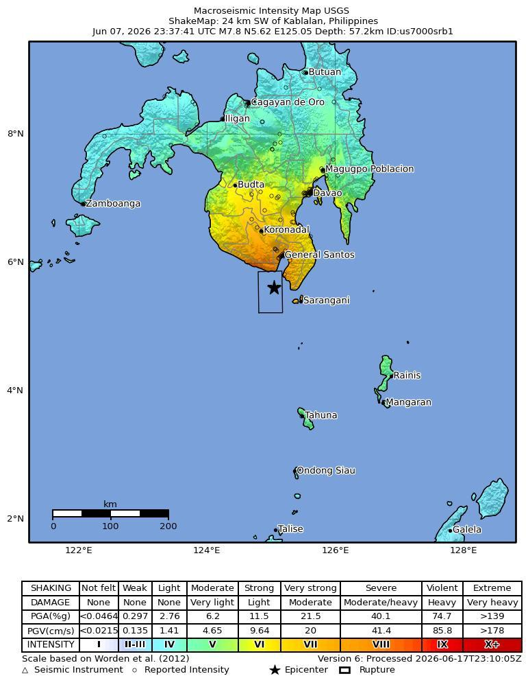
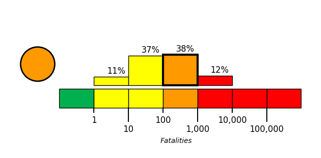

Introduction
On June 8, 2026, at approximately 0:37 local time, a magnitude 7.8 earthquake, with a depth of 55 km, struck 26 km Southwest of Kablalan, Philippines. The coordinate of epicenter of the earthquake was 5.59N, 125.05E.
The Philippine Sea plate is bordered by the larger Pacific and Eurasia plates and the smaller Sunda plate. The Philippine Sea plate is unusual in that its borders are nearly all zones of plate convergence. The Pacific plate is subducted into the mantle, south of Japan, beneath the Izu-Bonin and Mariana island arcs, which extend more than 3,000 km along the eastern margin of the Philippine Sea plate. This subduction zone is characterized by rapid plate convergence and high-level seismicity extending to depths of over 600 km. In spite of this extensive zone of plate convergence, the plate interface has been associated with few great (M>8.0) ‘megathrust’ earthquakes. This low seismic energy release is thought to result from weak coupling along the plate interface (Scholz and Campos, 1995). These convergent plate margins are also associated with unusual zones of back-arc extension (along with resulting seismic activity) that decouple the volcanic island arcs from the remainder of the Philippine Sea Plate (Karig et al., 1978; Klaus et al., 1992).
South of the Mariana arc, the Pacific plate is subducted beneath the Yap Islands along the Yap trench. The long zone of Pacific plate subduction at the eastern margin of the Philippine Sea Plate is responsible for the generation of the deep Izu-Bonin, Mariana, and Yap trenches as well as parallel chains of islands and volcanoes, typical of circum-pacific island arcs. Similarly, the northwestern margin of the Philippine Sea plate is subducting beneath the Eurasia plate along a convergent zone, extending from southern Honshu to the northeastern coast of Taiwan, manifested by the Ryukyu Islands and the Nansei-Shoto (Ryukyu) trench. The Ryukyu Subduction Zone is associated with a similar zone of back-arc extension, the Okinawa Trough. At Taiwan, the plate boundary is characterized by a zone of arc-continent collision, whereby the northern end of the Luzon island arc is colliding with the buoyant crust of the Eurasia continental margin offshore China.
Along its western margin, the Philippine Sea plate is associated with a zone of oblique convergence with the Sunda Plate. This highly active convergent plate boundary extends along both sides the Philippine Islands, from Luzon in the north to the Celebes Islands in the south. The tectonic setting of the Philippines is unusual in several respects: it is characterized by opposite-facing subduction systems on its east and west sides; the archipelago is cut by a major transform fault, the Philippine Fault; and the arc complex itself is marked by active volcanism, faulting, and high seismic activity. Subduction of the Philippine Sea Plate occurs at the eastern margin of the archipelago along the Philippine Trench and its northern extension, the East Luzon Trough. The East Luzon Trough is thought to be an unusual example of a subduction zone in the process of formation, as the Philippine Trench system gradually extends northward (Hamburger et al., 1983). On the west side of Luzon, the Sunda Plate subducts eastward along a series of trenches, including the Manila Trench in the north, the smaller less well-developed Negros Trench in the central Philippines, and the Sulu and Cotabato trenches in the south (Cardwell et al., 1980). At its northern and southern terminations, subduction at the Manila Trench is interrupted by arc-continent collision, between the northern Philippine arc and the Eurasian continental margin at Taiwan and between the Sulu-Borneo Block and Luzon at the island of Mindoro. The Philippine fault, which extends over 1,200 km within the Philippine arc, is seismically active. The fault has been associated with major historical earthquakes, including the destructive M7.6 Luzon earthquake of 1990 (Yoshida and Abe, 1992). A number of other active intra-arc fault systems are associated with high seismic activity, including the Cotabato Fault and the Verde Passage-Sibuyan Sea Fault (Galgana et al., 2007).
Relative plate motion vectors near the Philippines (about 80 mm/yr) is oblique to the plate boundary along the two plate margins of central Luzon, where it is partitioned into orthogonal plate convergence along the trenches and nearly pure translational motion along the Philippine Fault (Barrier et al., 1991). Profiles B and C reveal evidence of opposing inclined seismic zones at intermediate depths (roughly 70-300 km) and complex tectonics at the surface along the Philippine Fault.
Several relevant tectonic elements, plate boundaries and active volcanoes, provide a context for the seismicity presented on the main map. The plate boundaries are most accurate along the axis of the trenches and more diffuse or speculative in the South China Sea and Lesser Sunda Islands. The active volcanic arcs (Siebert and Simkin, 2002) follow the Izu, Volcano, Mariana, and Ryukyu island chains and the main Philippine islands parallel to the Manila, Negros, Cotabato, and Philippine trenches.
Seismic activity along the boundaries of the Philippine Sea Plate (Allen et al., 2009) has produced 7 great (M>8.0) earthquakes and 250 large (M>7) events. Among the most destructive events were the 1923 Kanto, the 1948 Fukui and the 1995 Kobe (Japan) earthquakes (99,000, 5,100, and 6,400 casualties, respectively), the 1935 and the 1999 Chi-Chi (Taiwan) earthquakes (3,300 and 2,500 casualties, respectively), and the 1976 M7.6 Moro Gulf and 1990 M7.6 Luzon (Philippines) earthquakes (7,100 and 2,400 casualties, respectively). There have also been a number of tsunami-generating events in the region, including the Moro Gulf earthquake, whose tsunami resulted in more than 5000 deaths.

Building Damage
Reports following the June 8, 2026 southern Philippines/Mindanao earthquake, described as magnitude 7.8 in many accounts and magnitude 8.2 in others, documented extensive building damage, including many collapsed or damaged buildings across Mindanao/southern Philippines [1][5][6][8][11][14][17][19][20][21]. In General Santos City/General Santos, witness and video evidence showed several buildings partially collapsing, multiple collapses, a section of a building collapsing, and several mostly low-rise buildings collapsed or heavily damaged; other reports cited several multi-story collapses, numerous smaller structures collapsed or severely damaged, and quake damage to key infrastructure [2][3][4][9][10][16][21][22]. Specific affected occupancies included a collapsed building housing a fast food restaurant, a collapsed Jollibee building, a popular hamburger joint that collapsed or was severely damaged, damaged shops, damaged markets and buildings, a damaged building, and a partial collapse of a commercial building housing a provincial radio station office, with debris falling onto parked vehicles [2][6][7][15][18][21][22]. Elsewhere, a collapsed commercial building was reported in Mindanao, a residential building was damaged in the municipality of Glan in Sarangani Province, and deaths were linked to collapsing buildings or falling debris, including in a damaged mosque, in South Cotabato and Davao Occidental and on Balut Island [1][10][12]. Casualties and rescue needs were associated with damaged, collapsed, or severely damaged buildings, with people injured mostly in damaged buildings and others believed or potentially trapped [1][13][20][21]. Teresito Bacolcol warned people to seek advice before returning to damaged buildings and houses that could collapse due to aftershocks [21][22].
Infrastructure Impact
Bridge infrastructure in General Santos was damaged, with reports stating that a key access bridge sustained dangerous cracks or cracked following the earthquake [1][5][18]. The same reporting also described partial collapse of small buildings and damage to several structures in General Santos, but the bridge damage was the explicitly identified access-infrastructure impact [1][5]. Aviation infrastructure and services were disrupted in General Santos. General Santos International Airport aka Tambler Airport in General Santos City reportedly sustained multiple damages after the earthquake [6]. The Civil Aviation Authority of the Philippines suspended all operations at General Santos City Airport, and the international airport in General Santos was temporarily shut or closed, with 17 domestic flights canceled [10][16][18][21][22]. Other reporting also stated that some flights in the country were canceled due to the tremors [24]. More generally, the earthquake caused landslides and damaged infrastructure, with reported damage estimated at 15 million Philippine pesos (US$243,897) [23]. Local press reports also described damage to numerous structures, though no additional infrastructure facilities were specifically identified in that report [24].
Resilience and Recovery
The June 8 magnitude 7.8 earthquake struck off Sarangani province and the southern coast of Mindanao, with the NDRRMC reporting by June 18 that 78 people had been killed and 30 remained missing [27][28]. Official casualty reporting changed over time, with earlier NDRRMC and OCD reports indicating deaths rising from 37 on June 9 to 45 on June 10, 55 on June 12, and 61–65 during June 13–15 before reaching 78 on June 18 [32]. Injury reporting was earlier listed by NDRRMC as 1,403 injured and 40 missing as of June 13, while the later June 18 update reported 30 missing, indicating revised missing-person figures over time [31][33][27][28]. As of June 14, more than 173,000 households, equivalent to about 724,000 people, had been affected or disrupted [28][30]. Immediate protective actions focused on tsunami and coastal hazards after the offshore earthquake triggered warnings in parts of the Philippines and neighboring countries, prompting evacuation of coastal residents before the warnings were lifted later the same day [29]. Philippine President Ferdinand Marcos Jr. suspended school classes in affected areas of Mindanao and called on coastal residents to evacuate immediately [9]. The Philippine Bureau of Information also advised residents in coastal areas of nine affected Mindanao provinces to move immediately to higher, safer ground [19][20]. Teresito Bacolcol, head of the Philippine institute, similarly advised people in coastal areas to evacuate to higher ground or farther inland [35][36]. Relief and displacement impacts were documented in Sarangani Province on June 11, where affected residents fetched water near a temporary shelter and received relief supplies [12]. Staff members and volunteers distributed relief supplies to affected residents near a temporary shelter in Sarangani Province on the same date [12]. Singapore offered and stated readiness to assist the Philippines after the powerful Mindanao earthquake, which left dozens dead and caused widespread damage [34]. In the preparedness phase following the event, the NDRRMC urged the public to participate actively in emergency drills to strengthen disaster preparedness, response capacity, and public safety [25][26]. Community impacts also included coastal uplift reported about two days after the earthquake, expanding the coastline in some areas by up to 200 meters, and a reported 2-meter seabed rise that exposed coral reefs and harmed marine life [28].
PAGER Estimates
USGS PAGER tool estimated the fatalities to be in the orange alert level, which is most likely between 100 and 1,000 with a probability of 38%.
USGS PAGER tool estimated the economic loss to be in the orange alert level, which is most likely between 100 and 1,000 million dollars with a probability of 35%.


References
- [1] 1news.co.nz - https://www.1news.co.nz/2026/06/08/no-tsunami-threat-to-nz-after-78-magnitude-philippines-quake
- [2] taipeitimes.com - https://www.taipeitimes.com/News/front/archives/2026/06/08/2003858733
- [3] bnonews.com - https://bnonews.com/index.php/2026/06/major-8-2-earthquake-strikes-philippines-tsunami-threat-issued
- [4] ground.news - https://ground.news/article/82-magnitude-earthquake-strikes-off-philippines-tsunami-warning-issued
- [5] stripes.com - https://www.stripes.com/theaters/asia_pacific/2026-06-07/tsunami-warning-okinawa-philippines-earthquake-21902089.html
- [6] livemint.com - https://www.livemint.com/news/world/philippines-earthquake-live-7-8-magnitude-quake-mindanao-tsunami-region-indonesia-palau-taiwan-malaysia-11780880438566.html
- [7] prokerala.com - https://www.prokerala.com/news/photos/philippines-south-cotabato-province-earthquake-aftermath-3760769.html
- [8] vietnam.vn - https://www.vietnam.vn/en/tinh-hinh-nguoi-viet-trong-dong-dat-tai-philippines
- [9] hindustantimes.com - https://www.hindustantimes.com/world-news/philippines-earthquake-videos-building-mindanao-collapses-panic-water-waves-tremors-watch-terrifying-visuals-101780890713410.html
- [10] local.newsbreak.com - https://local.newsbreak.com/new-york-post-509648/4697571076073-a-7-8-magnitude-quake-in-the-philippines-kills-at-least-16-fells-buildings-and-sets-off-a-tsunami
- [11] bbc.co.uk - https://www.bbc.co.uk/newsround/articles/cj6ge5k2z5ro
- [12] prokerala.com - https://www.prokerala.com/news/photos/earthquake-aftermath-in-sarangani-province-3761208.html
- [13] ground.news - https://ground.news/article/many-feared-trapped-under-earthquake-rubble-in-philippines
- [14] uk.headtopics.com - https://uk.headtopics.com/news/7-8-magnitude-earthquake-strikes-philippines-tsunami-84243986
- [15] en.haberler.com - https://en.haberler.com/a-7-8-magnitude-earthquake-struck-the-philippines-2265224
- [16] aol.com - https://www.aol.com/articles/devastating-magnitude-7-8-earthquake-023531000.html
- [17] en.tempo.co - https://en.tempo.co/read/2107649/todays-top-3-news-impact-of-philippines-quake-on-indonesia
- [18] m.rediff.com - https://m.rediff.com/news/report/pix-many-dead-injured-as-78-magnitude-earthquake-hits-philippines-triggers-tsunami-warning/20260608.htm
- [19] vietnam.vn - https://www.vietnam.vn/en/dong-dat-manh-7-8-do-o-philippines-it-nhat-19-nguoi-chet-da-xuat-hien-song-than-cao-1-4m
- [20] vietnam.vn - https://www.vietnam.vn/en/dong-dat-manh-7-8-do-o-philippines-it-nhat-15-nguoi-chet-da-xuat-hien-song-than-cao-1-4m
- [21] houstonpublicmedia.org - https://www.houstonpublicmedia.org/npr/2026/06/08/g-s1-126830/a-7-8-magnitude-earthquake-rocks-the-southern-philippines
- [22] kpbs.org - https://www.kpbs.org/news/international/2026/06/07/a-7-8-magnitude-earthquake-rocks-the-southern-philippines
- [23] taipeitimes.com - https://www.taipeitimes.com/News/taiwan/archives/2026/06/09/2003858807
- [24] en.haberler.com - https://en.haberler.com/the-moment-of-the-earthquake-in-the-philippines-2265582
- [25] n.news.naver.com - https://n.news.naver.com/mnews/article/091/0010234972
- [26] news.nate.com - https://news.nate.com/view/20260618n25831
- [27] en.vietnamplus.vn - https://en.vietnamplus.vn/phillippines-78-killed-30-missing-after-78-magnitude-quake-post344816.vnp
- [28] vietnam.vn - https://www.vietnam.vn/en/day-bien-nang-len-2m-sau-tran-dong-dat-kinh-hoang-o-philippines
- [29] vietnam.vn - https://www.vietnam.vn/en/philippines-da-trai-qua-nhieu-tran-dong-dat-chet-choc
- [30] vovworld.vn - https://vovworld.vn/news/philippines-earthquake-found-to-have-raised-seabed-by-up-to-2-metres-2443059.vov5
- [31] watchers.news - https://watchers.news/2026/06/15/strong-m6-2-earthquake-hits-near-the-coast-of-mindanao-philippines
- [32] vietnam.vn - https://www.vietnam.vn/en/dong-dat-tai-philippines-so-nguoi-thiet-mang-tang-len-78-nguoi
- [33] sentinelassam.com - https://www.sentinelassam.com/more-news/international/61-killed-more-than-1400-injured-after-powerful-earthquake-strikes-philippines
- [34] sg.headtopics.com - https://sg.headtopics.com/news/singapore-offers-condolences-and-assistance-to-philippines-84567056
- [35] lasvegassun.com - https://lasvegassun.com/news/2026/jun/07/78-magnitude-earthquake-shakes-part-of-southern-ph
- [36] vinnews.com - https://vinnews.com/2026/06/07/7-8-magnitude-earthquake-shakes-part-of-southern-philippines-tsunami-possible-for-some-coasts